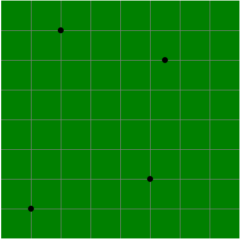

Cách tạo một cái bản đồ ảnh trong HTML
|
- Bản đồ ảnh có thể tạm hiểu là một loại hình ảnh đặc biệt, trên tấm hình sẽ có các vùng được xác định, mỗi vùng đó được gán với một cái liên kết. - Ví dụ: Tấm hình bên trái chính là một cái bản đồ ảnh, trên tấm hình có bốn vùng:
⛔ Các bạn hãy thử nhấp vào từng vùng để trải nghiệm. |
1) Các thành phần cấu tạo nên bản đồ ảnh
- Thông thường thì một cái bản đồ ảnh được tạo nên bởi hai thành phần:
- Thành phần thứ nhất chính là tấm hình mà các bạn muốn dùng nó để làm bản đồ ảnh.
- Thành phần thứ hai là một cái bản đồ hệ thống tọa độ (chứa các vùng được xác định)
| + | = | |||
| Tấm hình | Bản đồ hệ thống tọa độ | Bản đồ ảnh |
2) Cách tạo một cái bản đồ ảnh
 |
- Để tạo một cái bản đồ ảnh thì chúng ta thực hiện hai bước như sau:
|
2.1) Tạo bản đồ hệ thống tọa độ
- Để tạo một cái bản đồ hệ thống tọa độ thì chúng ta cần phải sử dụng thẻ <map> & <area>.
- Trong đó:
- Thẻ <map> dùng để xác định một cái bản đồ hệ thống tọa độ.
- Thẻ <area> dùng để xác định một vùng trên bản đồ hệ thống tọa độ.
- Đoạn mã bên dưới được dùng để tạo một cái bản đồ hệ thống tọa độ có tên là the-face, bên trong cái bản đồ hệ thống tọa độ này có bốn vùng:
- Vùng 1 (mắt trái) có dạng hình tròn, được liên kết đến trang tài liệu học HTML.
- Vùng 2 (mắt phải) có dạng hình tròn, được liên kết đến trang tài liệu học CSS.
- Vùng 3 (mũi) có dạng hình chữ nhật, được liên kết đến trang tài liệu học JavaScript.
- Vùng 4 (miệng) có dạng hình chữ nhật, được liên kết đến trang tài liệu học MySQL.
<map name="the-face">
<area shape="circle" coords="117,203,30" href="../html">
<area shape="circle" coords="218,203,30" href="../css">
<area shape="rect" coords="130,250,205,286" href="../javascript">
<area shape="rect" coords="126,292,210,332" href="../mysql">
</map>
2.2) Kết hợp tấm hình & bản đồ hệ thống tọa độ
- Sau khi đã tạo xong một cái bản đồ hệ thống tọa độ thì công việc tiếp theo đó chính là sử dụng thẻ <img> để chèn tấm hình mà mình muốn dùng nó để làm bản ảnh vào trang web. Bên trong thẻ <img>, ta thiết lập thêm thuộc tính usemap với cú pháp usemap="#tên bản đồ hệ thống tọa độ" để gán những vùng được xác định lên tấm hình, từ đó tạo thành bản đồ ảnh.
<map name="the-face">
<area shape="circle" coords="117,203,30" href="../html">
<area shape="circle" coords="218,203,30" href="../css">
<area shape="rect" coords="130,250,205,286" href="../javascript">
<area shape="rect" coords="126,292,210,332" href="../mysql">
</map>
<img src="../image/face.jpg" usemap="#the-face">
3) Các thuộc tính được sử dụng bên trong thẻ <area>
- Dưới đây là danh sách những thuộc tính được sử dụng bên trong thẻ <area>
(các bạn vui lòng bấm vào hình để tìm hiểu chi tiết cách sử dụng của từng thuộc tính)
| href |
- Thuộc tính này dùng để xác định đường dẫn đến tài liệu mà người dùng sẽ được chuyển đến khi họ nhấp vào vùng. .ttt-href |
| target |
- Thuộc tính này dùng để xác định nơi mà tài liệu sẽ được mở lên. .ttt-target |
| download |
- Thuộc tính này dùng để thiết lập việc: "khi người dùng nhấp vào vùng thì cái tài liệu được gán với liên kết của vùng đó sẽ tự động được tải xuống" .ttt-download |
| title |
- Thuộc tính này dùng để xác định tiêu đề của vùng. .ttt-title |
| shape |
- Thuộc tính này dùng để xác định hình dạng của vùng. .ttt-shape |
| coords |
- Thuộc tính này dùng để xác định một tập hợp các tọa độ tạo nên vùng. .ttt-coords |
4) Cách xác định một vùng trên bản đồ ảnh
|
- Khi nói về hình dạng của vùng thì nó được chia ra làm ba loại chính:
✔ Tùy vào hình dạng của vùng mà cách xác định tọa độ tạo nên vùng sẽ khác nhau. |
4.1) Vùng hình vuông (chữ nhật)
- Đối với vùng hình vuông, thuộc tính coords phải nhận một giá trị gồm bốn tham số:
| (1) left | - Xác định dựa theo khoảng cách từ cạnh trái của vùng đến cạnh trái của bản đồ ảnh. |
| (2) top | - Xác định dựa theo khoảng cách từ cạnh trên của vùng đến cạnh trên của bản đồ ảnh. |
| (3) right | - Xác định dựa theo khoảng cách từ cạnh phải của vùng đến cạnh trái của bản đồ ảnh. |
| (4) bottom | - Xác định dựa theo khoảng cách từ cạnh dưới của vùng đến cạnh trên của bản đồ ảnh. |
- Với một tấm hình dùng làm bản đồ ảnh có kích thước 200x200 như bên dưới:

- Nếu tôi thiết lập thuộc tính shape="rect" và coords="50,25,150,100" cho phần tử <area> thì tôi sẽ xác định được một vùng màu đen như sau:

4.2) Vùng hình tròn
- Đối với vùng hình tròn, thuộc tính coords phải nhận một giá trị gồm ba tham số:
| (1) x | - Xác định dựa theo khoảng cách từ tâm của hình tròn đến cạnh trái của bản đồ ảnh. |
| (2) y | - Xác định dựa theo khoảng cách từ tâm của hình tròn đến cạnh trên của bản đồ ảnh. |
| (3) radius | - Xác định dựa theo độ dài bán kính của hình tròn. |
- Với một tấm hình dùng làm bản đồ ảnh có kích thước 200x200 như bên dưới:
- Nếu tôi thiết lập thuộc tính shape="circle" và coords="150,100,25" cho phần tử <area> thì tôi sẽ xác định được một vùng màu đen như sau:

4.3) Vùng hình đa giác
- Để xác định giá trị của thuộc tính coords đối với một vùng "hình đa giác" thì chúng ta thực hiện lần lượt các bước như sau:
- Bước 1: Xác định số đỉnh của hình đa giác & vị trí của các đỉnh.
- Bước 2: Xác định hướng đi của các đỉnh để tạo thành một vùng khép kín.
- Bước 3: Xác định tọa độ của từng đỉnh.
- Bước 4: Ghép tọa độ của các đỉnh lại thành giá trị của thuộc tính coords.
(cách xác định tọa độ của một đỉnh cũng giống như cách xác định tâm của hình tròn)

- Để tạo một vùng "hình đa giác" màu đen trên tấm hình có kích thước 400x400 giống như phía trên thì chúng ta thực hiện lần lượt các bước sau:
- Bước 1: Xác định số đỉnh của hình đa giác & vị trí của các đỉnh.

- Bước 2: Xác định hướng đi của các đỉnh để tạo thành một vùng khép kín.

- Bước 3: Xác định tọa độ của các đỉnh.

- Bước 4: Ghép tọa độ của các đỉnh lại thành giá trị của thuộc tính coords.
(thứ tự ghép các đỉnh sẽ là: đỉnh một => đỉnh hai => đỉnh ba => đỉnh bốn => đỉnh một)
|
- Đỉnh đầu và đỉnh cuối phải là cùng một đỉnh, như thế mới tạo thành vùng khép kín. |
- Kết luận: giá trị của thuộc tính coords sẽ là: 100,50,275,100,250,300,50,350,100,50

- Thuộc tính href dùng để xác định đường dẫn đến tài liệu mà người dùng sẽ được chuyển đến khi họ nhấp vào vùng.
- Cú pháp:
- Khi người dùng nhấp vào cái miệng thì họ sẽ được chuyển đến trang tài liệu học CSS
<map name="the-face">
<area shape="rect" coords="126,292,210,332" href="../css">
</map>
<img src="../image/face.jpg" usemap="#the-face">
- Thuộc tính target dùng để xác định nơi mà tài liệu sẽ được mở lên khi người dùng nhấp vào vùng.
- Cú pháp:
- Trong đó, nơi mở tài liệu có thể được xác định dựa theo một trong bốn loại giá trị:
| _self | - Tài liệu sẽ được mở bên trong khung hiện tại (mặc định) |
| _top | - Tài liệu sẽ được mở bên trong tab hiện tại. |
| _blank | - Tài liệu sẽ được mở bên trong một tab mới. |
| _parent | - Tài liệu sẽ được mở bên trong khung cha của khung hiện tại. |
- Khi người dùng nhấp vào cái miệng thì trang tài liệu học CSS sẽ được mở lên trong một Tab mới.
<map name="the-face">
<area shape="rect" coords="126,292,210,332" href="../css/default.html" target="_blank">
</map>
<img src="../image/face.jpg" usemap="#the-face">
- Thuộc tính download dùng để thiết lập việc:
"khi người dùng nhấp vào vùng thì cái tài liệu được gán với liên kết của vùng đó sẽ tự động được tải xuống"
- Khi người dùng nhấp vào cái miệng thì tập tin hello.txt sẽ tự động được tải xuống.
<map name="the-face">
<area shape="rect" coords="126,292,210,332" href="../file/hello.txt" download>
</map>
<img src="../image/face.jpg" usemap="#the-face">
- Thuộc tính title dùng để xác định tiêu đề của vùng.
(khi người dùng di chuyển con trỏ lên vùng thì tiêu đề sẽ được hiện lên)
- Cú pháp:
<map name="the-face">
<area shape="rect" coords="126,292,210,332" href="../css/default.html" title="đây là vùng miệng">
</map>
<img src="../image/face.jpg" usemap="#the-face">
- Thuộc tính shape dùng để xác định hình dạng của vùng, nó có thể nhận một trong bốn giá trị sau đây:
| default | - Vùng sẽ chiếm toàn bộ diện tích của tấm hình. (thông thường thì giá trị này không được sử dụng, bởi vì nó gần như vô nghĩa) |
Xem ví dụ |
| rect | - Vùng sẽ có dạng hình vuông hoặc chữ nhật. |
|
| circle | - Vùng sẽ có dạng hình tròn. |
|
| poly | - Vùng sẽ có dạng hình đa giác (do chúng ta tự xác định) |
- Thuộc tính coords dùng để xác định một tập hợp các tọa độ tạo nên vùng.
- Lưu ý: Tùy vào hình dạng của vùng mà cách xác định tọa độ sẽ khác nhau.
- Bốn tọa độ 126 292 210 332 tạo nên vùng cái miệng.
<map name="the-face">
<area shape="rect" coords="126,292,210,332" href="../css">
</map>
<img src="../image/face.jpg" usemap="#the-face">